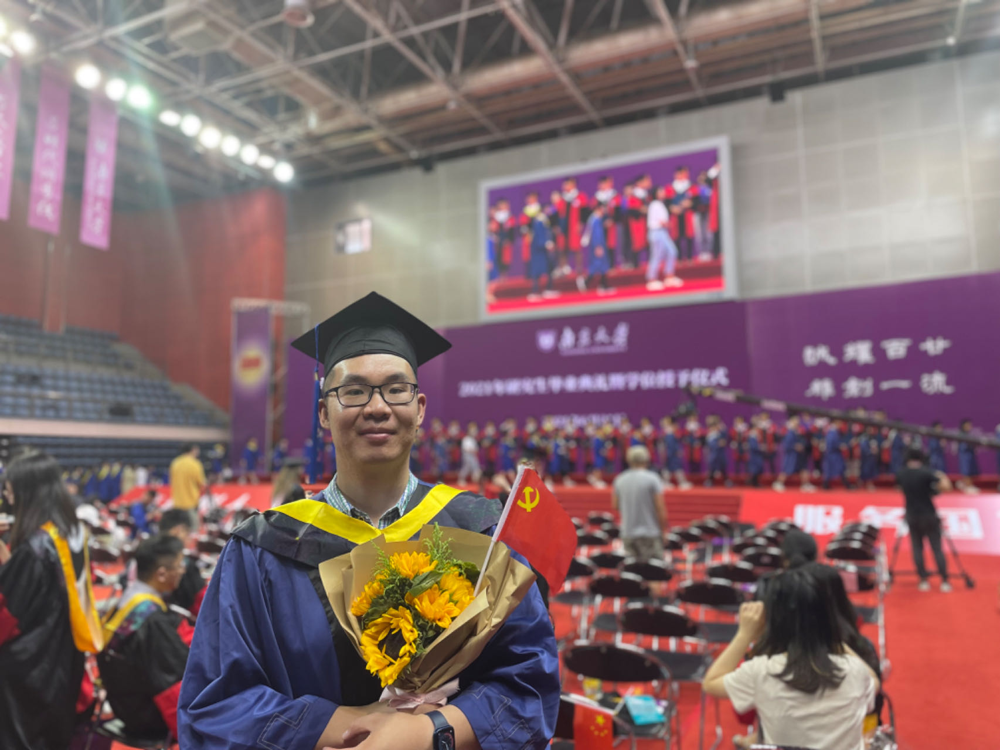

Lv Tang, 唐律
Ph.D. Student, University of Chinese Academy of Sciences
luckybird1994@gmail.com

Lv Tang, 唐律
Ph.D. Student, University of Chinese Academy of Sciences
luckybird1994@gmail.com
Yueyu HU, 胡越予
Ph.D. Student, New York University
yyhu AT nyu·edu

Hi there! This is Yueyu. I am currently pursuing a Ph.D. with Prof. Yao Wang at NYU Video Lab. I received a master's degree in computer science at Peking University, advised by Prof. Jiaying Liu at STRUCT. My research interests include computer vision, machine learning and image/video compression. I am also interested in photography, trains and railways, meteorology, science-fiction and computer network development.
WHIM as a new part of this site is now online. Check it out!
|
Towards Coding for Human and Machine Vision: A Scalable Image Coding Approach In this paper, we come up with a novel image coding framework by leveraging both the compressive and the generative models, to support machine vision and human perception tasks jointly. By introducing advanced generative models, we train a flexible network to reconstruct images from compact feature representations and the reference pixels. Experimental results demonstrate the superiority of our framework in both human visual quality and facial landmark detection, which provide useful evidence on the emerging standardization efforts on MPEG VCM (Video Coding for Machine). |
||
|
Coarse-to-Fine Hyper-Prior Modeling for Learned Image Compression End-to-End learned image compression framework with a coarse-to-fine hyper-prior model, featuring Signal Preserving Hyper Transform and Information Aggregation Reconstruction sub-network. The proposed model achieve superior performance to existing hyper-prior models with context models. [PDF] [Poster] [Project] [TF Code] [PyTorch Code] [Spotlight] |
||
Windy: A website to provide visualized numerical weather forecast results by, e.g. GFS, ECMWF.
DLVC: An open-sourced deep-learning driven video codec.
FVC-NIC: Open-Source learned image compression framework.
BDWM: The most popular & official Bulletin Board System (BBS) at Peking University.